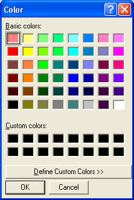

ColorRequester()
Syntax
Color = ColorRequester([CurrentColor])Description
Opens the standard requester to choose a color. The chosen color is returned under a 24-bit number containing the red, green and blue value, as usual.
Parameters
CurrentColor (optional) Sets the default color when the requester is opened. RGB() can be used to get a valid color.
Return value
The selected color, or -1 if the user canceled the requester. To easily get each RGB component value, Red(), Green() and Blue() can be used.
Example
Color = ColorRequester() If Color > -1 a$ = "You have selected following color value:" + Chr(10) ; Chr(10) only needed a$ + "24 Bit value: " + Str(Color) + Chr(10) ; for line-feed a$ + "Red value: " + Str(Red(Color)) + Chr(10) a$ + "Green value: " + Str(Green(Color)) + Chr(10) a$ + "Blue value: " + Str(Blue(Color)) Else a$ = "The requester was canceled." EndIf MessageRequester("Information", a$, 0) End

Supported OS
All